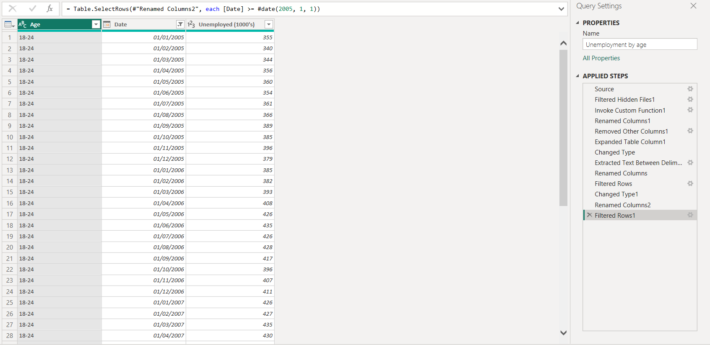

July 26, 2024
Barriers to Employment
This project explores the different barriers to employment
for the Department for Work and Pensions age cohorts
as well as external long-term and short-term factors affecting all ages.
Legal Notice:
Adhering to GDPR, personal data handled by DWP will not be included for this portfolio.
Only publicly accessible data will be displayed in this project.
Data gathering and cleaning
This project uses publicly accessible data from the Office for National Statistics (ONS). Although the material has already been compiled from the Labour Market Survey, it is necessary to clean and filter it to focus only on relevant content for analysis and maintain high standards.
When importing any data, it is always useful to check that it is stored in the appropriate format. These datasets are in the form of multiple CSV files, each containing introductory details at the beginning.
Below are examples of files showing the number of unemployed individuals and the unemployment rate for the 18-24 age group.
As both the data for the number of people unemployed and unemployment rate are stored in separate files (one for each age group), these all need to be compiled into two tables, one for the number of unemployed and one for the unemployment rate.
As the data will be imported directly from Excel to Power BI, the folder containing the files for each age group can be imported and, as shown below, the workbooks can be combined during the import process.
In this example, there are many fields which are irrelevant to the analysis and can be easily cleansed. There are also records which overlap with others when grouped. These records, however, are only in a few cases which can be easily amended with an extra line of code.
The source name column is in the form 'Unemployment [age range].csv', so this column can extract between " " and "." to only give the age range, and the column can be renamed "Age".
The date column has multiple formats with different levels of accuracy in the form year (YYYY), year and quarters (YYYY QQ), and year and month (YYYY MMM). To only use the date by year and month, all records can be filtered to only include the dates that end with MMM, and the data type and column name changed to "Date".
The data from more than 20 years ago could be considered outdated, so the date column can also be filtered to only show records from 2005 and later.
Lastly, the data type for the number of unemployed column should be changed to INT so that it's recognised as quantitative data.
The images below show these steps in more detail, including the M code written to perform these queries as well as the cleaned data with the steps applied shown.

Similar code can be written for the Unemployment rate table with a few differences.
The source name column is in the form 'Unemployment rate [age range].csv', so this column can extract between "rate " and "." to only give the age range, and the column can be renamed "Age".
The date column is the same as before, so the exact same filters can be applied.
Lastly, the data type for the unemployment rate column should be changed to % or a decimal so that it is recognised as quantitative data.
The images below show these steps in more detail, including the M code written to perform these queries as well as the cleaned data with the steps applied shown.
Data Mapping
Although there are only two tables, the visualisation will be interactive with a legend for the age groups connecting both charts, which requires the relationship between the 'Age' variable on both tables to be established.
The cardinal relationship between the 'Age' fields in the two tables is many-to-many. With these tables, a many-to-many cardinality does not pose an issue in the data model as there are no unique entries between the two tables.
Now the data can be analysed and visualised to show trends.
Data Visualisation
As these tables are a time-series with a quantitative output, grouped by age, a time-series graph is an appropriate visualisation with multiple lines separated by the age group variable.
As can be seen below, a time-series graph offers more visual and readable insights into the data.
Before exporting to the PowerPoint presentation, the visualisation should be cleaned up and formatted to empasise key trends.
Firstly, replacing the legend with buttons will make the graphs more interactive. This new legend can be formatted by organising the layout, resizing the buttons and matching the colours to their respective lines.
Looking at the visualisation, there are 3 notable fluctuations on these graphs that can be identified: a sudden increase in unemployment and unemployment rates from 2008; a gradual decrease from 2014, returning to pre-2008 levels around 2018; and a spike in unemployment in 2020.
These points can be shown on the graphs and the areas that they are in effect can be highlighted.
The final dashboard can be seen embedded in the PowerPoint presentation below.
Insights
Both graphs show a sharp increase from 2008, especially the unemployment rate for the 18-24 age group as we can see the gradients of this graph decreases as age increases.
This is most likely due to the 2007/2008 financial crash, which inflated unemployment.
In 2020, a sudden increase can also be seen in both graphs as COVID emerged and the country went into lockdown, resulting in many industries such as hospitality and travel being severely impacted.
Economic crises disproportionately affect younger workers, while older and middle-aged groups tend to have more stable employment. The 2008 financial crisis and the 2020 COVID-19 pandemic both had major impacts on unemployment across age groups, but the youngest age group (18-24) was hit hardest.
The long recovery following the 2008 financial crash shows a decade-long effort to return to normal employment levels, with a period of stabilisation around 2018-2019. The onset of the COVID-19 pandemic disrupted this recovery, with unemployment again spiking across all age groups.
We can deduce that this area highlighted on the charts is the 'regular' unemployment level with minimal influence from extreme economic factors.
Long-term vs short-term Unemployment
Data Gathering and Cleaning
The dataset chosen for this section is from 2018 because, as established from our analysis in the previous section, unemployment in 2018 would have been minimally effected by external factors such as the economic crash or COVID.
As the dataset used for this was also sourced from publicly accessible data from Office for National Statistics, it is also relatively clean.
However, the data is split by region on sperate sheets shown below. As this variable is irrelevant to this report, the sheets need to be combined and the data grouped by 'Duration' and 'Reason' instead.
The column showing which sheet the data is from (the region) is irrelevant to this analysis so this column can be removed.
Removing any rows with null values will clean the notes added to the sheet that are not part of the table.
Looking at the list of different reasons, there is an inconsistency where 1 record says "other reasons" while the rest say "other reason" which could distort the data. This needs to be replaced to match the other records with this reason.
As the region column has been removed the records can be grouped where the 'Reason' and 'Duration' columns match and the 'Number' column summed.
For easier legibility, the duration descriptions can be changed to be more concise.
Finally, the 'Number' columns data type should be changed to INT so it can be recognised as quantitive data.
The images below shows these steps in more detail both from the M code written to perform these queries as well as the steps applied.
Data Visualisation
This will be the form of a PivotTable in Excel using the duration and the reason for unemployment as rows and show the number of people as the value.
Using this data in a PivotTable will organize the data in a hierarchical way, allowing a detailed breakdown. This gives a clear, nested view of how unemployment reasons are distributed across different time durations; which reasons are more prevalent for shorter vs. longer durations of unemployment;
provides a concise, hierarchical summary of unemployment reasons across different time frames.
The table shown below now offers insightful trend analysis into how reasons for unemployment change with the duration of unemployment.
To improve the interaction with the data, adding slicers simplifies interaction with the PivotTable, making it easier for users to filter data based on unemployment duration and focus on key areas of interest, which is especially useful in dynamic reports.
The slicer also provides a cleaner and more appealing layout, allowing for quick and easy adjustments to the data being analysed.
After importing the table into the PowerPoint presentation, the final formatting can be done using Excel within PowerPoint to tidy the visual so its insights can be easily identified by emphasising the key information.
For example, the duration header in the table is already shown in the slicer so this can be hidden to give a cleaner visualisation.
The final format of the table in the presentation can be seen below.
Insights
For those who have never been employed, a significant majority are students or waiting for job applications to process. This is distinct from other timeframes, where family/home care or health issues play a more dominant role.
Those unemployed for less than 1 year, being unemployed without further specification is the largest category, highlighting a transition period for many. However, retirement and awaiting job results are also significant factors.
Retirement becomes a more dominant reason in the 1-2 years category. Health-related reasons, which appear prominently in long-term unemployment, are not as significant yet.
The 2-5 years catagory shows the longer the period of unemployment, the more likely it is due to retirement, family responsibilities, or illness/disability. This shows a shift from short-term causes (like students or job transitions) to long-term health or lifestyle decisions.
In cases of very long-term unemployment (over 5 years), health issues are by far the most dominant cause, followed by family/home responsibilities. Retirement also plays a role, but it becomes secondary to health-related reasons.
The visualisations above give a good indication of the economic and external factors driving unemployment. By splitting the data by age and length of unemployment, a more complete picture of the causes of unemployment can be seen.
We can confidently say that the 2007/2008 financial crisis is likely responsible for the sudden increase in unemployment for younger people, and COVID caused the 2020 spike across all ages. However, we can also confidently state that long-term unemployment is caused by external factors rather than internal demographic factors such as age or economic fluctuations.
Short-term unemployment (less than 1 year) tends to be dominated by unemployment status, where people are still actively seeking jobs. This is most likely due to frictional or possibly seasonal unemployment.
Medium-term unemployment (1-5 years) shows a stronger influence of retirement, family responsibilities, and some increase in health issues.
Long-term unemployment (over 5 years) is heavily driven by circumstancial barriers such as health-related reasons, dissablilties and home/family care, reflecting a more entrenched disconnection from the labour market.
This pattern highlights how reasons for unemployment evolve over time, with active job search and student status being dominant early on, while health and family responsibilities take over in the long term.
Although many potential reasons are outside the scope of this report, addressing circumstantial barriers will be necessary to tackle this issue. These can include job accessibility, availability, or local economic conditions.
Topics such as these are explored later in the presentation as suggested by the section title pages below.